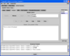

Textpad:
|
The “Textpad” module allows you to write in a text area that is shared among all the team or group participants. Every character that is typed in the text area is transmitted in real-time so that all participants see the document’s contents change in real-time. The document editing process is controlled by a queue-like access structure. In order to type anything in the text area, you have to put your name in the “Module Control” list by clicking on the “Request” button. This queue access structure is based on a first come, first served basis. If you are the first person to request control, you will get immediate access to the text area, and all the successive user requests will be put in the user list queue. In this control module, the manager and user based account types provide different control functionality. A manager type user can take control at anytime, and thus overwrite a regular user’s capability to interact with the textpad.  Once you have control over the textpad follow these instructions. First, you have to click on the “New” button to create a new document and to give it a name. Once a name is assigned to the document, you can start to type in the Text area. After you are done typing, and you want to allow the next user in the queue to edit the content, just click on the “Release” button, and the next person in the queue can edit the document. If there are no other members in the queue, you will be prompted to save the text pad, in which case the document is saved to the server. At any time, while you edit the document, you can save the text-area’s contents to your local hard drive by clicking on the “Save” button. To close the document, and thus save its current contents to the server, just click on the “Close” button. The “Edit” button works in conjunction with the archive feature to retrieve and to edit closed and thus saved documents. This feature is further documented in the “Archive” section. |